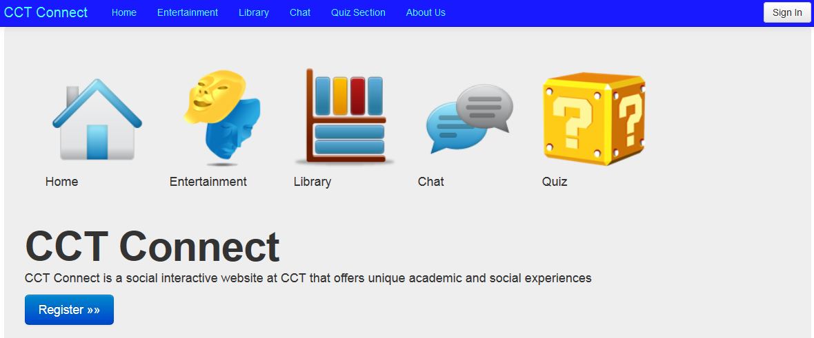

As a final Year Project, a team of 6 final year students have developed a social interactive website built for the students of CCT called "CCT Connect" The main functions of the website are as follows:
My main responsibility in the project team is to install and configure the CCT Connect WebServer so that the CCT Connect Site will be published through this WebServer. My active involvement in the CCT Connect project completion gave me the opportunity to develop and enhance skills that will be beneficial in my future career.
